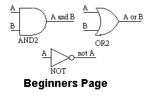
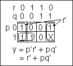
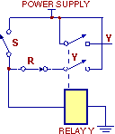
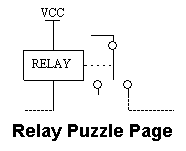
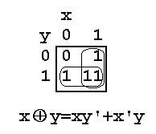
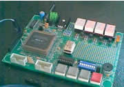

Read an article
Read one of the articles. There are new and revised articles, February 2002.
|  | I have prepared a few articles that you can read
whilst you are at this site. These articles are best viewed with Internet Explorer 3 or
later at a resolution of 600x800 or greater. You will need to have the symbol font on your
computer to view the exclusive-OR articles properly. I have included an article for beginners and interested bystanders with no previous experience of digital concepts assumed. This is intended to give the reader some idea of what digital design is like. This article contains animated GIF images that you might like to look at but no theory. You can read an introductory but not elementary article on Boolean Algebra. This article is intended to provide the background required for reading the remaining articles. One omission from this articles is a discussion of binary numbers. Most beginning books on digital design give the necessary explanation of number systems. Apart from this I hope that you will find that the article does not require any heavy background knowledge. The Boolean algebra article is split over two pages. You can go to page 1 from the link opposite. I have prepared an article that I have called "Intelligent Logic". The Boolean algebra pages provide the necessary basic theory needed to read this page. The article demonstrates what happens when you apply feedback in a combinatorial logic circuit. This is where logic circuits get a life. I provide enough detail to show you a practical way of designing these asynchronous sequential circuits. The puzzle article demonstrates, in a tutorial fashion, the analysis of a switching circuit that behaves in a state of continuous oscillation. The article shows how the oscillations start and settle down and precisely what states the circuit can oscillate through. The characteristics of an oscillatory digital circuit show up well in this article. The pages on exclusive OR algebra have followed my article in the UK electronics magazine "Electronics World", February 1999 issue. The magazine has given this article the short name "New Logic". The purpose of the article is to demonstrate that Boolean algebra based on the exclusive-OR and AND operators is a complete Boolean algebra in its own right and has all the required facilities for graphical and algebraic simplification necessary to make it a useful concept for digital circuit design. Applications for use in CPLD design are given. You can get to page 1 of the exclusive-OR pages from the link on the left. There is also a section on practical projects. The end objective of digital design is to produce a working application. I can quickly produce a working design on my printed circuit board by downloading the design from my computer. You can see the complete source code in both AHDL and VHDL for a working countdown clock from my practical projects page. I consider that a good understanding of logical design theory is desirable if you are designing with programmable logic devices. Perhaps the articles will give you something to think about. |
|  Boolean Algebra |
|
|  Intelligent Logic |
|
|  | |
|  XOR 1 Page |
|
|  Practical Projects |
Return to Home page OR Navigation menu at the top of the page OR continue with the Bystanders page:
* MaxPlus II is a registered trade name of Altera Corporation.
If you would like to discuss any of these papers with me send me an e-mail.
(Copyright) David N. Warren-Smith, CPENGDigital Logic Systems, South Australia
Updates: 30 May 1999, 26 January 2002, 12 February 2002.